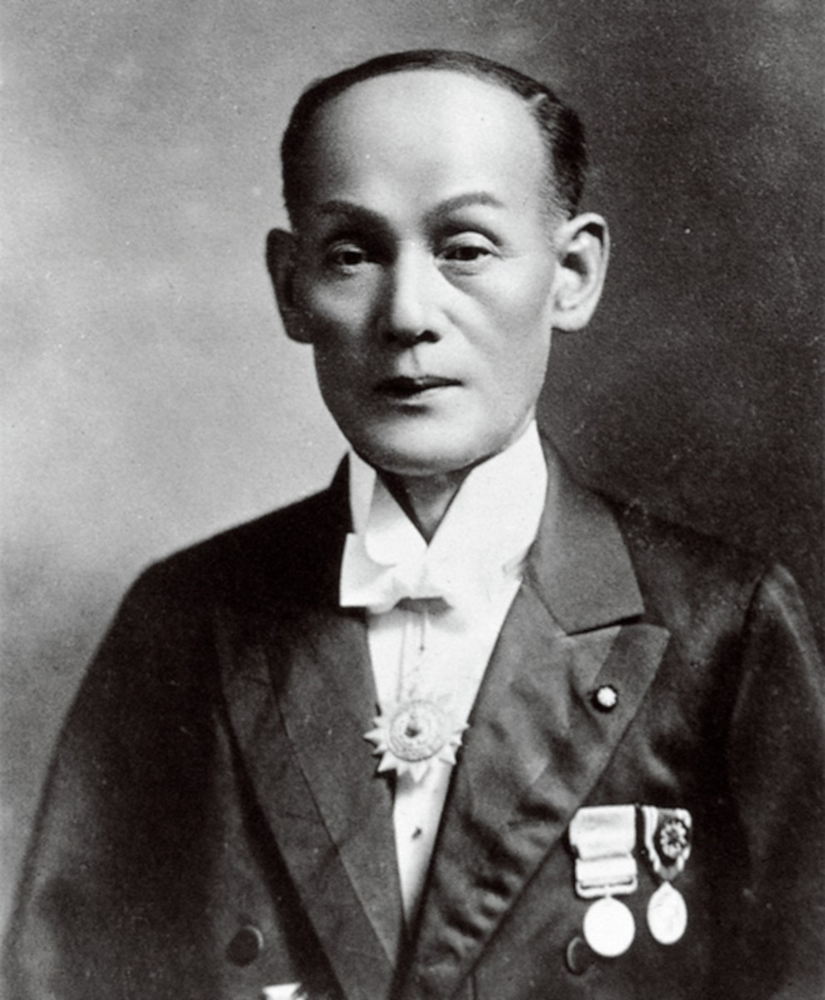

Zoals jullie weten is Yamaha r6 me lievelings motor. Het is zeker niet de snelste motor, maar het heeft een speciale 600cc geluid. Klik hier om de geluid te horen van Yamaha r6. Links zien jullie de specs van de motor, maar ik neem aan dat het een beetje klein is. Klik hier om de plaatje in het groot te zien als je interesse hebt. De motor heeft ongeveer 120 pk dat ervoor zorgt dat de motor een top snelheid heeft van 260kmh.
{kind=link}
Dit is Torakusu Yamaha degene die Yamaha heeft ontworpen. In 1897 heeft Yamaha met een paar andere mensen waarvan hij hulp kreeg als eerst een muziek instrumenten onderneming gestart. Na de Tweede Wereldoorlog besloot de toenmalige president van het bedrijf, Gen-ichi Kawakami, om motorfietsen te gaan bouwen. Het eerste model, de YA-jeman, werd geproduceerd vanaf 1954. In dat eerste jaar werden er 125 van gemaakt. Later werd Yamaha een eigen company. Er komen steeds verschillende soorten motoren van de Yamaha. Ik vind de Yamaha r6 het mooist of natuurlijk de broer van r6 die r1 heet. maar dat is een 1000cc motor. Yamaha r6 is een 600 cc motor met een lekker vel geluid, die van r1 is zwaarder.